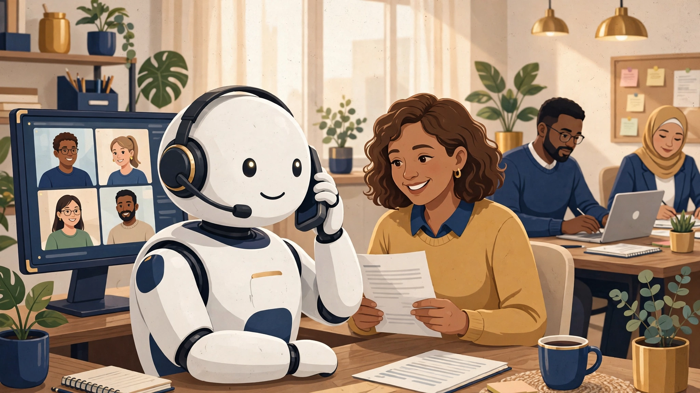

一切從一通電話開始
2026 年 11 月，Grok 官方帳號只用一句話宣布新功能：Grok Bot 現在可以打電話了。

demo 影片的劇情很日常：Bot 發現你的網路合約三天後到期，主動問要不要打去取消；你按下核准，它真的撥給電信客服，客服祭出一年 10% 折扣挽留，它當場回絕——因為它知道你已經有更好的方案。
注意，它不只是傳話。它在電話裡談判，做了一個你沒有逐字交辦的判斷。
而且這不是單一業者的嘗試。差不多同一時期，Muse 也推出了代打電話的功能，還能替用戶去參加線上會議、做紀錄、帶回結論。當不同產品線不約而同往同一個方向走，代表這不是行銷噱頭，而是 AI 助理的下一個共同型態：從「回答問題」變成「替你辦事」。
下一個問題自然是：當這種會自己辦事的 AI 助理連進企業內部，員工可以把工作交辦給它時，辦公室會發生什麼事？這一天，離我們有多遠？
這一天有多遠？分三層看
技術層：已經到了
打電話、參加會議、讀信、寫文件、操作系統、跨平台交辦，現在全部做得出來，demo 滿天飛。
產品層：正在補企業要件
個人版助理再強，企業也不敢直接放進內網。企業要的是單一登入整合、權限分級、完整稽核日誌、資料不留存不用於訓練的合約保證。這一層會在未來幾年間陸續補齊，這才是真正的上市門檻——卡住企業的從來不是模型能力，是治理能力。
採購與法遵層：最慢
一套系統要進企業，要過資安審查、法務合約、個資衝擊評估。受監管的產業更慢。
所以合理的判斷是：最先落地的，會是客服、資訊服務台、行政庶務這類低風險、高重複的場景，員工交辦 AI 處理例行工作會慢慢變成日常；但讓 AI 對核心系統有寫入權限，多數企業短時間內還是不敢。故事會來，只是會分集播出，一集一集慢慢演——這正是企業準備的時間。
員工可以交辦 AI 之後，先變的五件事
第一，工作的基本單位改變
從「自己做事」變成「交辦、核准、驗收」。員工的價值不再是執行速度，而是交辦的品質和驗收的眼光。
第二，核准疲勞出現
每件小事都要人點核准，前三週大家還會看內容，三週後就開始無腦點。核准機制形同虛設的那一天，就是出事的那一天——這是效率問題，更是資安問題。
第三，授權邊界變成主管的新功課
你交辦的是「取消合約」這個動作，AI 執行的是「談判」這個判斷。當 AI 會在執行過程中即興發揮，「我授權它做到哪一步」就不再是 IT 問題，而是管理問題。
第四，AI 開始跟 AI 講話
你的業務助理打電話給對方的客服助理談條件，人類只看最後送回來的摘要。溝通成本暴跌，但「雙方 AI 談出一個沒人預期的結果」這種新型事故，也會跟著出現。
第五，新人訓練梯斷裂
新人本來靠處理雜事、看前輩怎麼做事來練基本功。雜事被 AI 吃掉之後，三年後公司會發現：沒有中階可用了。這是最慢、最難解的一題。
資安帳單：五個風險，一個比一個貴
一、身分與權限被繼承
AI 助理通常拿著員工的帳號和憑證做事，等於員工的全部權限，被一台會即興發揮的機器繼承。它做錯的事，算員工的、主管的、還是公司的？正解是讓 AI 有自己的身分、最小權限、短期憑證，而不是借用人的帳號——但多數現行導入方式都還沒做到。
二、間接提示注入：AI 時代的頭號攻擊面
AI 要讀信件、文件、網頁才能辦事，攻擊者就把惡意指令藏在它會讀到的內容裡：一封客訴信、一份供應商送來的規格文件、一個看似正常的網頁。AI 讀完，照著藏在裡面的指令把內部資料往外送。傳統資安防的是「人點了惡意連結」，現在要防的是「AI 讀了惡意內容」。這不是假設中的攻擊，是已經有實例的攻擊。
三、資料外洩被正規化
過去員工要外洩資料，得自己動手複製、傳送，心理門檻和技術門檻都在。現在只需要對 AI 說一句「幫我整理好寄給對方」，速度和規模完全不同。資料分級和外洩防護如果沒把 AI 通道納入，等於大門裝了鎖，旁邊開了一道自動門。
四、稽核斷鏈
AI 的決策帶有機率性，同一個交辦，兩次結果可能不同。事件發生後，稽核人員要問「它當時為什麼這樣做」，如果沒有完整的交辦紀錄和操作日誌，連重演都做不到，究責和法遵直接卡死。
五、平台集中風險
AI 助理平台會握有全公司各系統的連接金鑰：信箱、文件、行事曆、內部系統。它一旦被入侵，不是單一系統失守，是全公司一次失守。平台本身，變成全公司最高價值的攻擊目標。
企業應該如何因應：治理先行，順序不能反
第一，先給合法通道，再談禁止
只禁不給，影子使用只會躲得更深。給員工合規的工具和清楚的使用範圍，風險才看得見、管得動。
第二，AI 比照委外帳號管理
每一個連進內部的 AI 都要有登記：主人是誰、用途是什麼、權限清單到哪。沒有主人的 AI，就像沒有主人的系統帳號，是稽核的惡夢。
第三，授權分三級：唯讀、產草稿、可執行
低風險讓它自己跑，高風險動作強制人工核准，而且核准畫面要設計成「必須看內容」而不是按鈕連點——防的正是核准疲勞。
第四，從低風險場景試點
內部服務台、會議紀錄、客服回覆草稿，這類做錯了代價有限的場景先行，把稽核和應變的經驗練起來，再往核心靠近。
第五，把提示注入納入攻防演練
紅隊的劇本要更新：不只是寄釣魚信給員工，而是寄一封「寫給 AI 看的信」給公司，看 AI 會不會上當。
第六，採購合約談清楚三件事
操作日誌完整留存、客戶資料不用於模型訓練、資安事件的通報與責任歸屬。技術規格談得再漂亮，這三件沒寫進合約，都是空的。
如果你不引進，但同業引進了呢？
不會滅亡，但會先在「商品化服務」上被拉開差距：客服回應速度、報價速度、文件產出量。當同業的回覆以分鐘計、你的以小時計，客戶感覺得到，長期下來訂單會往那邊移。人才市場也會吃虧——年輕員工會開始預設「公司有 AI 工具可以用」是基本配備。
但後進者不是只有劣勢。先行者先繳學費：AI 亂承諾客戶、個資事件上新聞，這些事故的教訓是公開的；後進者可以買更成熟的產品、抄先行者的治理框架，用更低的風險達到同樣的能力。產業史上，贏的常常不是第一個用的，是第一個用得穩的。
真正危險的位置，是中間那一種：不正式引進、也不治理，放任影子使用慢慢長大，直到爆出事件，然後在最差的時機、被輿論推著倉促上線。要嘛有治理地用，要嘛有意識地不用，最怕的是假裝它不存在。
結語：爭的不是要不要，是治理跟不跟得上
這場變化不會以零和收場。AI 吃掉的是例行層：重複、可核對、做錯了能重來的事。而高信任、高複雜、需要有人出面負責的服務，反而會因為「到處都是 AI」而變得更稀缺、更值錢。
所以企業真正的考題不是「要不要讓 AI 進來」——它已經用影子使用的方式進來了。考題是：你的治理速度，跟不跟得上員工的使用速度。
未來的故事會一集一集慢慢播下去，不會某個早上醒來世界就變了。差別只在於，你是坐在治理好的位置上從容看，還是被劇情推著走。時間是有的，就看要不要提早準備。
研究與資料來源
- Grok Bot 官方公告（X，2026-11-05）：「Grok Bot can now make phone calls.」與代打電話 demo 影片（合約到期提醒、Call 核准卡片、回絕客服挽留折扣）。
- Grok Bot 通話功能上線報導（TeslaNorth，2026-11-04）：demo 內容整理，並指出官方未公布適用資格、收費方式與是否向通話對方揭露 AI 身分。
查證日期：2026 年 11 月 16 日。Grok Bot 通話功能的適用資格、收費方式、通話時是否向對方揭露 AI 身分，官方至查證日尚未公布，本文未臆測；Muse 代打電話為 2026 年公開的測試功能，代為參加會議與紀錄為其產品功能。本文事實部分以上述來源為據，其餘章節為作者分析觀點。本文由 AI 協助查證、整理與排版，經金霸審閱後發布。